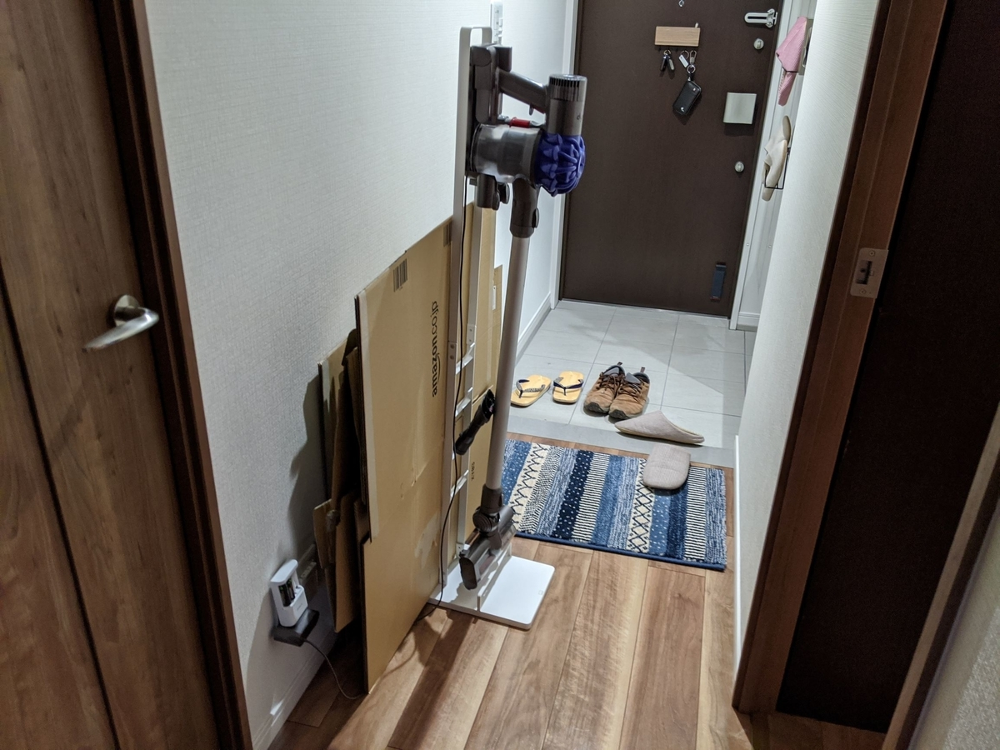

アマゾニストならダンボールストッカーは必須だと思った
公開日：
前々から欲しかったんだけど、なんとなく買わずにいた段ボールストッカーを、先日とうとう買ってしまった。

これまで、たまった段ボールはダイソンの掃除機立てで挟み、玄関に置いていたのだが、だんだん掃除機立ての方が耐えられなくなり、ネジが緩んでグラグラしてきたのだ。しかも、ネジひとつ、どこか行ってまうし……このまま放置するわけにもいかず、しぶしぶ購入と相成った。

そのおかげで、こうじゃ！ すごくスッキリして気持ちがいい。こんなことなら、もっと早くに買うべきだったぜ。

山崎実業 そのまま結束できる ダンボール収納 ダンボールストッカー タワー ブラック 3304
- メディア: ホーム&キッチン
今回買った「山崎実業 そのまま結束できる ダンボール収納 ダンボールストッカー タワー ブラック 3304」にはキャスターもついているので、部屋から部屋への移動も楽だ。試しにリビングへ転がし、この前建築した食器棚の段ボールをまとめてみたが……スチールのフレームがしっかり段ボールを挟んでくれるので、とても結束しやすい。今までは段ボールを何枚も一生懸命太ももで挟んで……みたいに頑張ってたんだが、それは無駄な行為だった。
ちなみに、この段ボールストッカーは下から紐を通してそのまま結束できるのが売りだが、この作業は割とダルかった。あらかじめ紐を這わしておいて、その上に段ボールを積んでいけばいいのだけど。その意味でも、なんかいい紐（＋くるくる結束）のいい収め方はないものかと考えている。本体がスチール製だから、強力なマグネットフックか何かで引っ掛けられないだろうか。

ナガオ 新聞・雑誌がかんたん縛れる くるくる結束器 CHK-01
- メディア: ホーム&キッチン
ついでに言えば、このくるくる結束も、個人的にはかなりおすすめ。不器用で紐を結べない僕のようなクズでも、段ボールや雑誌がバラバラにならないようにできる。こういうインストゥルメントこそ文明の利器と呼ぶにふさわしい。
今回買った段ボールストッカーは結局、トイレの前、リビングの入り口に置いておくことにした。幅、奥行きともにジャストフィットだ。一見ドアを開く邪魔になるように見えるが、何回か試したところ、支障はなさそうだ。段ボールがないときは、廊下の収納にそのままゴロゴロッと IN してしまえる。まさしくピッタリで、我が家に迎えるべくして迎えたアイテムと言えよう。